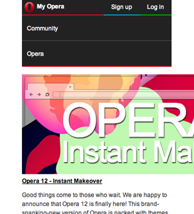

Responsive Web Design
Components
by Eric Bollens
ebollens [GitHub] / ebollens [LinkedIn] / @ericbollens [Twitter]
The Web is Flexible
The control which designers know in the print medium... is simply a function of the limitation of the printed page.
We should embrace the fact that the web doesn't have the same constraints, and design for this flexibility.
~ John Allsopp, A Dao of Web Design
The Shackles of 960
Designers think in terms of 960px
Pinch and zoom on mobile devices
Waste of space on large screens
The Flexible Grid
Proportional design
Percentages, not pixels
But what about those pretty Photoshop designs?
target ÷ context = result
Works for widths, heights, fonts, margins, etc.
|
|
|
|
Breaking the Flexible Grid
Still has limits
Small screen
constricts content
Large screen
isolates content
The Mobile View
In addition to 960, you might also have a mobile design
We need to get between the two - with one site!
Media Queries
Originally in CSS 2 for media types
Became its own module in CSS 3 for media sampling
@media (max-width: 479px){ } @media (min-width: 480px){ }
@media (max-height: 479px){ } @media (min-height: 480px){ }
@media (max-device-width: 479px){ } @media (min-device-width: 480px){ }
@media (max-device-height: 479px){ } @media (min-device-height: 480px){ }
@media (orientation: portrait){ } @media (orientation: landscape){ }
@media (min-aspect-ratio: 16/9){ } @media (max-aspect-ratio: 16/9){ }
@media (min-deviceaspect-ratio: 3/2){ } @media (device-aspect-ratio: 16/9){ }
@media (min-color: 8){ } @media (max-color: 32){ }
@media (min-color-index: 256){ } @media (max-color-index: 65536){ }
@media (min-resolution: 300dpi){ } @media (max-resolution:299dpi){ }
@media (min-resolution: 300dpi){ } @media (max-resolution:299dpi){ } |
|
Viewport Tag
Mobile browsers assume desktop pages
but the viewport tag lets us specify otherwise
<meta name="viewport" content="width=device-width,initial-scale=1">NOTE: Non-normative but well-supported
Responsive Images
Images have fixed size
When we go fluid, what happens?
 |
 |
Except that doesn't actually happen...
Responsive Image One-Line Fix
Works for more than just images
img, embed, object, video {
max-width: 100%;
}That's just the start
So let's open it up... Questions?
ebollens.github.io/edu13-responsive-components
ebollens [GitHub] / ebollens [LinkedIn] / @ericbollens [Twitter]